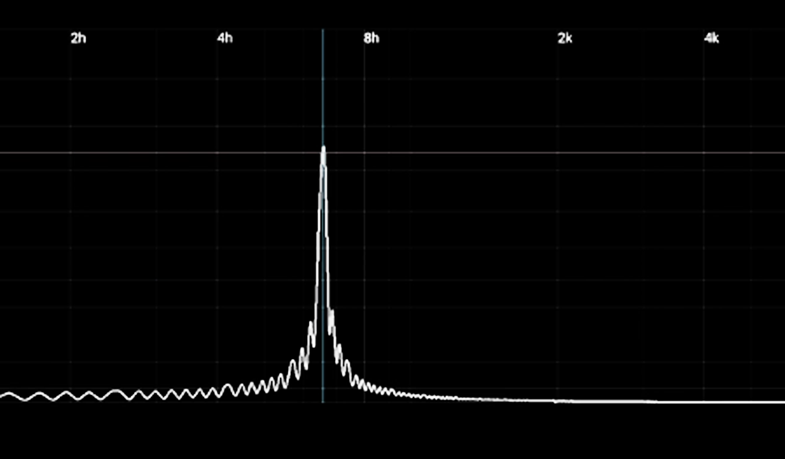
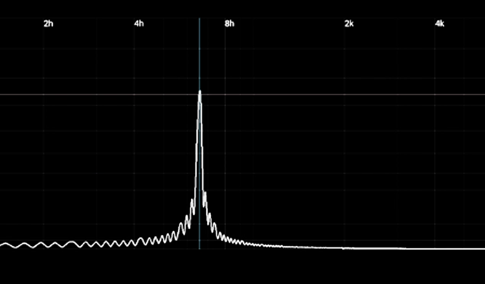

Représentation du son¶
Table des matières¶
Introduction¶
Le lien entre mathématiques et musique n’est pas récent puisque dès l’antiquité la musique est associée aux mathématiques. Elle est même considérée par Pythagore au VIe siècle avant J.C. comme étant une science mathématique, au même titre que l’arithmétique, l’astronomie et la géométrie.
{kind=link}
On cite souvent Pythagore comme l’un des pères de la théorie musicale. C’est à lui qu’on doit la compréhension des fréquences, c’est-à-dire des différentes hauteurs qui sont symbolisées par les notes de musique.
Un travail que continuera, des siècles plus tard, Jean-Philippe Rameau avec son fameux Traité de l’harmonie réduite à ses principes naturels publié en 1722.

La musique serait donc mathématique, c’est du moins ce que disait Leibniz en 1712 : “La musique est un exercice caché d’arithmétique, l’esprit n’ayant pas conscience qu’il est en train de compter”.

Au XXe siècle, les compositeurs cherchent à tout prix à se détacher de la musique tonale. Il faut trouver de nouveaux systèmes de composition. On assiste alors à la création de l’atonalité, du dodécaphonisme, de la musique sérielle. Exemple avec l’un des compositeurs les plus inclassables de la première moitié du siècle dernier: Béla Bartók.


{kind=link}
Et c’est certainement là que réside le mystère qui a fasciné et qui fascine toujours autant les mathématiciens, les physiciens, les scientifiques au même titre que les compositeurs. L’émotion provoquée par la musique est-elle explicable, théorisable ? A partir de quand arrête-t-on de parler de sons pour parler de musique ? La musique contemporaine basée sur des équations est-elle trop abstraite pour provoquer des émotions ?
Le XXe siècle est aussi celui des machines, et en particulier celui des ordinateurs. Depuis Alan Turing en 1936 et sa célèbre « machine », ses concepts de programme prendront tout leur sens avec l’essort des ordinateurs.
{kind=link}
Depuis 2009, en France, une part d’algorithmique a été introduite dans les programmes du lycée et le vocable apparaît même à l’école primaire. La discipline trouve peu à peu sa place dans les manuels du secondaire… et dans le cœur des enseignants de mathématiques. La science informatique s’est également imposée, progressivement, comme une discipline tout aussi fondamentale que les disciplines scientifiques « dures » classiques que sont les mathématiques, la physique ou la mécanique. Le développement exponentiel des capacités des ordinateurs, dans un XXe siècle de l’information a accéléré de manière phénoménale ce positionnement. L’enseignement « officiel » de la discipline peut apparaître tardif, en France comme en Suisse, malgré des plans numériques élaborés depuis plusieurs années.
La Conférence intercantonale de l’instruction publique de la Suisse romande et du Tessin (CIIP) a adopté son plan d’action pour l’éducation numérique en 2018. Ce plan prévoyait que dans les cinq prochaines années, tous les élèves de l’école obligatoire et de toutes les filières du degré secondaire II disposent de connaissances et de compétences numériques. L’utilisation active des outils, l’éducation aux médias et la science informatique sont concernées. Ce plan ambitieux décline ses objectifs en cinq domaines prioritaires : les plans d’études, les équipements, la formation des directions d’établissements et du corps enseignant, ainsi que la collaboration avec les hautes écoles et le développement de la veille technologique et pédagogique. Il s’agit de doter l’école des moyens de former au numérique par le numérique. L’informatique, science et technique du traitement automatique de l’information, est clairement distinguée des usages des outils numériques de médiation des savoirs, tandis que l’éducation aux médias a pour objet la compréhension de l’environnement médiatique contemporain dans une perspective critique et responsable. Ces trois dimensions sont considérées comme inséparables.
L’élaboration d’activités spécifiques, en mode «débranché» ou non, s’appuyant sur l’utilisation ou la création de ressources logicielles est donc centrale. Activités que devront s’approprier les enseignants et qui devront recevoir l’adhésion des élèves.
Dans ce contexte, l’élaboration de séquences d’enseignement, dont la finalité est de toucher, sensibiliser les élèves afin de les motiver à poursuivre dans l’apprentissage de la science informatique, doit s’appuyer sur différents ressorts :
• la perception scientifique des phénomènes, à travers des concepts déjà perçus ou connus : mathématique et physique ont toute leur place dans cet apprentissage, renforçant la formation scientifique, mais vus plus comme un outil pédagogique n’obstruant pas l’accès à la connaissance de la science informatique elle-même,
• le ressort émotionnel, vecteur d’apprentissage et d’adhésion (métacognition) : l’aspect ludique, pratique et la connexion avec le monde sensoriel est particulièrement favorisé par la relation de plus en plus étroite qu’entretien l’informatique avec la musique : depuis le début de la musique électronique dans les années 1950, l’informatique a pénétré l’univers musical : au niveau des outils, mais surtout s’agissant de la création et de la diffusion, sans parler de l’émotion même suscitée par l’aspect algorithmique, synthétique d’œuvres aujourd’hui créées exclusivement via la technologie. L’informatique s’est par ailleurs affirmé comme un incomparable outil de démocratisation et d’accès à la création musicale, notamment avec ce que l’on nomme les « home studios ».
On se propose ici de poser le cadre de séquences d’enseignement de l’informatique à destination d’un public d’élèves de l’enseignement secondaire deux (maturité), mêlant mathématiques, physique, et s’appuyant sur les leviers pédagogiques et didactiques offerts par l’expérience sensorielle (la musique) et la métacognition.
Cette dizaine d’activités constitue une base de travail pouvant être utilisée à différents niveaux d’approfondissement concernant l’apprentissage informatique : familiarisation avec un environnement informatique général (machine et hardware, système d’exploitation, fichiers, dossiers, communication via serveur ou entre machines, …), de programmation (éditeur graphique, langage – python), exploitation et création via l’environnement de programmation (accès aux bibliothèques spécifiques, à la documentation en ligne, créations de programmes et d’utilitaires, manipulation et/ou création d’interfaces graphiques, utilisation approfondie du langage de programmation et des interfaces …).
Elle peut être ajustée également s’agissant des différents niveaux de profondeurs souhaités concernant les autres disciplines fondamentales dont il est fait référence, les mathématiques, la mécanique et la physique, et intéresser indifféremment toutes les années de la maturité.
Elle mérite bien entendue d’être enrichie, en particulier par les retours enseignants-élèves.
1. Le son¶
1.1. Signal analogique (physique) temporel¶
1.1.1. Onde de pression¶
Le son est une onde mécanique nécessitant un milieu matériel pour se propager. Ce milieu peut être un gaz (comme l’air), un solide ou un liquide. Le son ne peut donc pas se propager dans le vide. Une onde sonore est une succession de champs de pression-dépression, ou compression-dilatation. L’exemple « visible » de l’impulsion mécanique donnée sur une corde élastique illustre parfaitement ce phénomène.

Illustration expérimentale
Lorsqu’on frappe les branches d’un diapason, celles-ci se mettent à vibrer et le diapason émet un son. L’amplitude de vibration des branches est trop faible pour être vue directement, mais on peut mettre en évidence la vibration en baignant les extrémités des branches du diapason dans un verre rempli d’eau ; on peut alors observer des vagues à la surface de l’eau et quelques éclaboussures.
1.1.2. L’oreille comme capteur¶
Caractéristiques de l’oreille, sensibilité, oreille interne, transfert acoustique-électrique vers le système nerveux. - à compléter


1.1.3. Vibration et fréquence¶
Un son pur est représenté par une fonction sinusoïdale du temps, de période T et de fréquence f = 1/T.

Un son est une vibration mécanique se propageant dans un milieu matériel jusqu’à atteindre un récepteur, notre oreille par exemple.
1.2. Contenu fréquentiel (analyse spectrale)¶
1.2.1. Signal pur¶
Un signal audio pur est un signal sinusoïdal.
 

{kind=link}
1.2.2. Signal complexe (à contenu fréquentiel)¶
Un signal complexe est un signal à contenu fréquentiel multiple. Il correspond acoustiquement à un signal audio réel. Ce type de signal s’obtient en fait en sommant plusieurs signaux « fondamentaux », sinusoïdaux.
{kind=link}
{kind=link}
{kind=link}
Activité 0¶
Echantillonnage
Classe : 1M, 2M
Difficulté : basique 1
Objectif informatique : le premier objet de cette activité est de permettre à l’élève d’appréhender la problématique de la représentation de l’information au sens large, comme le passage d’un univers symbolique à un autre. Il s’agit tout d’abord de passer d’un espace physique sensoriel (l’audition) à un autre espace sensoriel (la vue) et à la modélisation mathématique permettant de représenter ce phénomène acoustique : la représentation pseudo-sinusoïdale continue d’une onde sonore théorique, puis sa représentation numérique discrète. Ce premier travail intellectuel doit permettre aux élèves d’une part de se familiariser avec le matériau servant de support aux activités suivantes (quelques notions élémentaires relatives au son), et d’autre part de faciliter leur compréhension du changement de paradigme ultérieur entre l’espace physique (plutôt que mathématique) et l’espace numérique et le codage binaire de l’information. Le second objet de cette activité est de permettre aux élèves de se familiariser avec l’outil Audacity, ses fonctionnalités de visualisation graphique et de reproduction sonore, offrant deux modes de représentation du son. En particulier la notion de fréquence d’échantillonnage et le critère de Shannon, essentiel en traitement du signal, sont perçus visuellement et auditivement (découpage de l’onde sonore en une multitude de points et perception des effets de la fréquence d’échantillonnage sur la qualité du rendu).
Objectif mathématique et physique (transversal) : l’activité permet de réactiver, confirmer ou souligner des savoirs mathématiques relatifs aux relations fonctionnelles, aux représentations dans le plan et à la trigonométrie. L’activité permet de réactiver, confirmer ou souligner des savoirs mécaniques et physiques relativement aux ondes, à la notion de milieu de propagation, de période et de fréquence.
Mode : «branché / débranché» : utilisation de l’ordinateur et du logiciel Audacity - pas d’environnement de développement. Cette activité peut permettre de faire utiliser le tableur et ses fonctionnalités aux élèves et coïncider avec un enseignement de type bureautique - science informatique transversal.
Pré-requis :
informatique : utilisation de l’ordinateur et familiarisation avec l’environnement informatique
mathématique : fonctions, fonctions trigonométriques simples, notions d’amplitude, de période et de fréquence, représentation sur un repère plan, notion d’espace continu / discret
physique : notion d’onde mécanique (pression, compression-dilatation) et sa représentation
Durée : la séquence d’enseignement se découpe en deux séances de 45mn.
1ère séance : éléments de cours sur l’information et le son en particulier.
Cette première séance doit être vue comme une introduction à la problématique traitée par l’activité proprement dite. Elle est l’occasion de travailler la transdisciplinarité avec d’autres disciplines fondamentales (mathématiques, physique) mais également une discipline artistique, la musique. Elle peut donc s’effectuer en parallèle d’un de ces enseignements, en coordination avec un enseignant de ces disciplines : mathématiques, physique, ou musique. Les éléments mathématiques et physiques théoriques suffisants sont présentés dans cet ouvrage à la section 1.1 : Signal analogique (physique) temporel. L’enseignant peut également s’appuyer sur certains éléments de la section 1.2 Contenu fréquentiel (analyse spectrale). Une introduction sous l’angle de la musique pourra s’appuyer sur une approche instrumentale mettant en évidence les notions de hauteur (fréquence), de timbre (richesse harmonique), d’onde de pression transmise dans un espace matériel : ceci devra être fait en collaboration avec un enseignant de musique, avec le concours d’instruments divers : piano, flute, cordes, cuivres ou vents…
Problématique de la représentation : fonction sinus, amplitude, fréquence, période. Rappels mathématiques et physiques sur les notions abordées : notion d’onde de pression, compression-dilatation, compréhension de la représentation graphique (sinus). L’enseignant traite rapidement la notion d’onde sonore comme la somme de «sons élémentaires» - il peut utiliser à ce titre un des outils (programmes python) présentés dans les activités de 1 à 4. Cette séance n’étant pas concentrée sur des éléments liés à la science informatique, on peut imaginer une activité propre permettant de mettre en évidence ces notions mathématiques et physiques fondamentales (activités 1 et 2).
2ème séance : activité proprement dite.
Devoir maison : évaluation
Moments didactiques : 1er moment didactique. Mise en situation - Première séance (cours) - 45mn 2ème moment didactique. Exploration individuelle : chaque élève prend possession du matériel, des outils : ordinateur, environnement de travail, logiciel Audacity, matériel audio - Deuxième séance (activité proprement dite) - 5-10mn 3ème moment didactique. Moment technique et technologique : les élèves manipulent le programme Audacity, lancent les exécutions, manipulent les fenêtres graphiques (interfaces), observent les graphes et écoutent différentes portions de morceaux de musique (3 maximum).

Visualisation d’un morceau de musique sur Audacity¶
Manipulation d’un morceau de musique sur Audacity¶
Les élèves travaillent de manière autonome, au casque individuel, les échanges sont limités. L’enseignant circule dans la classe et s’assure de l’appropriation des outils. Il revient au tableau régulièrement afin de dérouler les consignes : lancement d’Audacity, manipulation, écoute des différents morceaux, zoom.


{kind=link}
Zoom sur une partie du morceau visualisé sous Audacity : dilatation temporelle, composition fréquentielle.¶
1ère phase. L’enseignant s’assure de la bonne compréhension des phénomènes : notions d’amplitude et de fréquence, dilatation temporelle, fréquences «visibles» des composantes du signal. En particulier, sur la dernière visualisation, on observe qu’on peut mettre en évidence une «quasi-période» entre les instants 0,8320 et 0,8345. Le calcul de la période donne donc 0,8345-0,8320 = 0,0025s, soit une fréquence de 1/0,0025 = 400Hz. L’enseignant questionne les élèves sur cette fréquence : est-elle basse ? haute ? L’enseignant s’appuie ensuite sur la génération d’un son «pur» à 400Hz, via les programmes python tracesinus.py, listensinus.py ou encore puresignalssum.py (description dans les activités 1 & 2). Par la visualisation et l’écoute, les élèves peuvent se représenter l’information extraite du fichier audio (composante de fréquence ~ 400Hz).
2ème phase. L’enseignant poursuit le zoom sur le signal et questionne les élèves sur l’interprétation de ce qu’ils voient. Il les amène progressivement à la compréhension de la notion de discrétisation, résulttat du passage d’une représentation continue apparente correspondant à la réalité physique à une représentation discrète réelle correspondant à la réalité numérique.

{kind=link}
Zoom sur une partie du morceau visualisé sous Audacity : mise en évidence de la discrétisation.¶
3ème phase. L’enseignant propose aux élèves d’écouter une partie du morceau de musique choisi aux différentes fréquences proposées par Audacity, de 8000 à 384000 Hz.

Ecoute à différentes fréquences d’échantillonnage sous Audacity.¶
Après 5 à 10 mn d’écoute autonome, l’enseignant questionne les élèves sur ce qu’ils ont écouté et sur leur interprétation des fréquences indiquées. Deuxième séance - 20-25mn
4ème moment didactique. Mise en commun et institutionnalisation : l’enseignant reprend la main au tableau et vidéoprojecteur. Examen des modes de représentation visuel et audio : sens, interprétation. Interprétation du visuel de la courbe sonore dilatée temporellement : la discrétisation numérique est mise en évidence. L’enseignant recueille de manière guidée les appréciations des élèves sur la qualité du morceau de musique écouté à différentes fréquences d’échantillonnage. Cette notion est simplement posée à ce stade, elle sera reprise et développée dans le temps suivant. Le recueil des appréciations concernant la qualité sonore peut être réalisé via un tableau où figurent en première ligne toutes les fréquences autour de la fréquence médiane 48000 Hz, et dans la ligne suivante la qualité perçue par les élèves : Mauvaise / Convenable / Bonne ; l’enseignant inscrit un segment (représentation au tableau) pour chaque choix de chaque qualité associée, ou travaille de préférence directement sur un fichier de type excel complété avec les retours élèves.

Exemple de tableau excel enseignant récoltant les appréciations par les élèves de la qualité sonore de l’échantillon.¶
Une fois le tableau complété, il est projeté : l’enseignant questionne les élèves sur l’interprétation qu’ils peuvent donner des graphes issus du tableau de données. Il doit faire ainsi ressortir la qualité perçue à partie de la fréquence d’échantillonnage de 44100Hz. La nécessité d’une fréquence d’échantillonnage minimale doit ici apparaître. Dans un deuxième temps, l’enseignant interroge sur les résultats pour les fréquences supérieures. L’inutilité d’aller au-delà d’une certaine fréquence (en l’occurence 44100 Hz) doit ressortir. L’étape suivante consiste à identifier cette valeur de 44100 Hz : à quoi correspond-elle ? L’enseignant revient sur le champ audible par l’oreille humaine : 20Hz - 20000Hz… Il situe alors 44100Hz par rapport à la fréquence la plus élevée que peut percevoir l’oreille humaine, 20000Hz… La fréquence d’échantillonnage apparaît comme devant être au moins égale au double de cette fréquence de 20000Hz. En dernier lieu, l’enseignant revient sur la notion même de fréquence d’échantillonnage. Que signifie-t-elle ? C’est le nombre d’échantillons pris par unité de temps. L’enseignant illustre son propos par le dernier visuel de la figure 4 : entre les temps 6,8310s et 6,8315s, on dénombre à peu près 23 échantillons, soit 23/0,0005 = 46000Hz. On retrouve quasiment la fréquence 44100 Hz apparaissant en bas à gauche de la fenêtre Audacity.
Identification de la fréquence d’échantillonnage (ici 44100Hz).¶
Deuxième séance - 15-20mn
5ème moment didactique. Travail sur la technique : les élèves sont laissés en autonomie une bonne partie du temps sur leurs postes de travail, expérimentent les outils et concepts institutionnalisés en manipulant les paramètres d’Audacity. Deuxième séance - 25-30mn 6ème moment didactique. Evaluation. Devoir maison - 30mn
Supports didactiques :
ordinateur individuel, logiciel Audacity, casque audio individuel connecté sur la sortie audio de l’ordinateur de chaque élève, documentation papier ou en ligne, supports papier pour la prise de notes. Ordinateur enseignant avec sortie audio (2 enceintes - stéréo), vidéoprojecteur, tableau.
Activité 1¶
Signaux sonores élémentaires
Classe : 1M, 2M
Difficulté : basique 1
Objectif informatique 1 : le premier objet de cette activité est de permettre à l’élève d’appréhender la problématique de la représentation de l’information au sens large, comme le passage d’un univers symbolique à un autre. Il s’agit ici de passer d’un espace physique sensoriel (l’audition) à un autre espace sensoriel (la vue) et à la modélisation mathématique permettant de représenter un phénomène, ici acoustique (la représentation sinusoïdale continue d’une onde harmonique). Ce premier travail intellectuel doit permettre aux élèves d’une part de se familiariser avec le matériau servant de support aux activités suivantes (les éléments relatifs au son), et d’autre part de faciliter leur compréhension du changement de paradigme ultérieur entre l’espace physique (plutôt que mathématique) et l’espace numérique et le codage binaire de l’information. Le second objet de cette activité est de permettre aux élèves de se familiariser avec les outils informatiques de visualisation graphique et de production sonore, offrant deux modes de représentation du son. En particulier l’information fréquentielle, essentielle en traitement du signal, est abordée visuellement dans le plan temporel (sinusoide, période) et perçue auditivement (hauteur du son - grave/aigu).
Objectif informatique 2 : cette activité peut être envisagée comme support de sensibilisation de l’élève à l’environnement de programmation et à la programmation en python elle même : graphe sinusoïdal obtenu via un programme python, familiarisation avec l’environnement de programmation (éditeur Visual Studio ou autre, …), avec la création de programme, le débug ; entrées / sorties, sotie graphique, appels aux bibliothèques (numpy, matplotlib, pyo). Certaines notions élémentaires relatives aux langages de programmations et au langage python peuvent être mises en pratique, après un cours préalable (notion de variable, boucle for, passage de valeur à travers une fonction, …). Elle pourra donc être reprise dans l’onglet “programmation” du document général.
Objectif mathématique et physique (transversal) : l’activité permet de réactiver, confirmer ou s’appuyer sur des savoirs mathématiques relatifs aux relations fonctionnelles, aux représentations dans le plan et à la trigonométrie. L’activité permet de réactiver, confirmer ou s’appuyer sur savoirs mécaniques et physiques relativement aux ondes, à la notion de milieu de propagation, de période et de fréquence.
Mode : branché / débranché
Pré-requis :
informatique : programmation utilisation de l’ordinateur et environnement
mathématique : fonctions fonctions trigonométriques simples représentation sur un repère plan
physique : notion d’onde mécanique (pression, compression-dilatation)
Durée : la séquence d’enseignement se découpe en quatre séances de 45mn et une de 30mn.
1ère séance : éléments de cours sur l’information et le son en particulier. Problématique de la représentation. Rappels mathématiques et physiques sur les notions abordées.
2ème séance : activité proprement dite.
3ème séance : reprise de l’activité et des notions traitées.
4ème séance : exercices pratiques.
5ème séance : évaluation. Moments didactiques : 1. Mise en situation - Première séance (cours) - 45mn 2. Exploration individuelle : chaque élève prend possession du matériel, des outils : ordinateur, environnement de travail, programmes tracesinus.py et listensinus.py, puis tracesinush.py et listensinush.py, matériel audio - Deuxième séance (activité proprement dite) - 10mn 3. Moment technique et technologique : les élèves manipulent les programmes tracesinus.py et listensinus.py, puis tracesinush.py et listensinush.py, lancent les exécutions, manipulent les fenêtres graphiques (interfaces), observent graphes et sons. Via la bibliothèque matplotlib, le résultat peut être visualisé et via la bibliothèque pyo, il peut être écouté. Les élèves travaillent de manière autonome, les échanges sont limités. L’enseignant circule dans la classe et s’assure de l’appropriation des outils et de la compréhension des phénomènes. Deuxième séance - 35mn 4. Mise en commun et institutionnalisation : l’enseignant reprend la main au tableau et vidéoprojecteur. Examen des modes de représentation visuel et audio : sens, imterprétation. Interprétation de la courbe sinusoïde et de sa fréquence (espace temporel) visuellement et auditivement, par l’utilisation des programmes listensinus.py et listensinush.py. Troisième séance - 45mn 5. Travail sur la technique : les élèves sont laissés en autonomie sur leurs postes de travail, ré-expérimentent les outils et concepts institutionnalisés en manipulant les paramètres des programmes tracesinush.py et listensinush.py (fréquences, amplitudes). Ils réalisent les signaux (graphiques et audios) proposés sur la fiche d’exercice distribuée par l’enseignant. Quatrième séance - 45mn 6. Evaluation. Cinquième séance - 30mn
Supports didactiques :
ordinateur individuel, environnement de programmation et programmes python, casque audio individuel connecté sur la sortie audio de l’ordinateur de chaque élève, documentation papier ou en ligne, supports papier pour la prise de notes. Ordinateur enseignant avec sortie audio (2 enceintes - stéréo), vidéoprojecteur, tableau.
def tracesinus(freq):
# sinus function at freq(Hz) frequency
t = np.arange(0., 0.01, 0.00005)
plt.plot(t,np.sin(2*pi*freq*t))
label1 = "fonction sinus, fréquence "
label2 = str(freq)
label3 = "Hz"
label = label1 + label2 + label3
plt.ylabel(label)
plt.show()
def listensinus(freq):
# sinus function at freq(Hz) frequency
s = Server().boot()
s.start()
a = Sine(freq, mul=1, add=0).out()
time.sleep(5)
s.stop()
def tracesinush(freq, harmo):
# sinus function at freq(Hz) frequency, and harmo harmonics
t = np.arange(0., 0.005, 1/(30*harmo*freq))
plt.figure(figsize = (harmo+4, harmo+2))
for i in range (1,harmo+1):
nbr = 330+i
plt.subplot(nbr)
plt.plot(t,np.sin(2*pi*i*freq*t))
label1 = "fonction sinus, fréquence "
label2 = str(i*freq)
label3 = "Hz"
label = label1 + label2 + label3
myText = plt.title(label, size = 'x-small')
fontsize = 8
plt.title(label)
plt.show()
plt.figure(figsize = (8, 6))
for i in range (1,harmo+1):
plt.plot(t,np.sin(2*pi*i*freq*t))
label1 = "fonction sinus, fréquences "
label =''
for i in range (1,harmo+1):
label2 = str(i*freq)
label3 = "Hz "
label = label + label2 + label3
label = label1 + label
plt.title(label)
plt.show()
def listensinush(freq, harmo):
# sinus function at freq(Hz) frequency, and harmo harmonics
s = Server().boot()
for i in range (1,harmo+1):
s.start()
a = Sine(i*freq, mul=1, add=0).out()
time.sleep(1)
s.stop()
1: code couleur pour le niveau de connaissance dans le degré :
vert : basique orange : médian rouge : avancé
Activité 2¶
Composition (addition) de signaux sonores élémentaires
Classe : 1M, 2M
Difficulté : médian 1
Objectif informatique 1 : cette activité poursuit la problématique de la représentation de l’information sonore, dans la continuité de l’activité 1. L’élève poursuit son apprentissage des différents modes de représentation par une complexification liée à la somme de signaux sinusoïdaux. Ce deuxième travail met l’élève face à modification visuelle opérées par l’addition de signaux, et la modification auditive perçue. Cette complexification est une étape décisive afin de comprendre la nature d’un signal sonore quelconque et de la problématique ultérieure de sa représentation numérique. Le second objet de cette activité reste la familiarisation avec les outils informatiques de visualisation graphique et de production sonore, offrant deux modes de représentation du son, le premier offrant à présent une représentation également dans le plan spectral. L’addition sonore est ainsi perçue visuellement (différentes oscillations) et auditivement (composition harmonique).
Objectif informatique 2 : cette activité peut être envisagée comme support de sensibilisation de l’élève à l’environnement de programmation et à la programmation en python elle même : graphes sinusoïdaux obtenus via un programme python, familiarisation avec l’environnement de programmation (éditeur Visual Studio ou autre, …), avec la création de programme, le débug ; entrées / sorties, sotie graphique, appels aux bibliothèques (numpy, matplotlib, pyo). Certaines notions élémentaires relatives aux langages de programmations et au langage python peuvent être mises en pratique, après un cours préalable (notion de variable, boucle for, passage de valeur à travers une fonction, …). Elle pourra donc être reprise dans l’onglet “programmation” du document général.
Objectif mathématique et physique (transversal) : l’activité permet de réactiver, confirmer ou s’appuyer sur des savoirs mathématiques relatifs aux relations fonctionnelles, aux représentations dans le plan et à la trigonométrie. L’activité permet de réactiver, confirmer ou s’appuyer sur savoirs mécaniques et physiques relativement aux ondes, à la notion de milieu de propagation, de période et de fréquence.
Mode : branché / débranché
Pré-requis :
informatique : programmation utilisation de l’ordinateur et environnement
mathématique : fonctions, addition de fonctions fonctions trigonométriques simples représentation sur un repère plan
physique : notion d’onde mécanique (pression, compression-dilatation)
Durée : la séquence d’enseignement se découpe en quatre séances de 45mn et une de 30mn.
1ère séance : reprise rapide des éléments de cours sur l’information et le son en particulier. Rappels mathématiques (somme de fonctions) et physiques sur les notions abordées.
2ème séance : activité proprement dite.
3ème séance : reprise de l’activité et des notions traitées.
4ème séance : exercices pratiques.
5ème séance : évaluation. Moments didactiques : 1. Mise en situation - Première séance (cours) - 45mn 2. Exploration individuelle : chaque élève prend possession du matériel, des outils : ordinateur, environnement de travail, programmes tracesinush.py et listensinush.py (déjà utilisés), puis puresignalssum.py, matériel audio - Deuxième séance (activité proprement dite) - 10mn 3. Moment technique et technologique : les travaux de la précédente activité sont repris. Les élèves vont construire des nouveaux signaux à partir des fichiers sinusoïdaux déjà obtenus… en les ajoutant via le programme puresignalssum.py ! De nouvelles courbes sont ainsi tracées. Via la bibliothèque pyo, le résultat peut être visualisé et écouté. Cette activité permet d’aller progressivement vers la notion de composition/décomposition spectrale et de transformée de Fourier… Les élèves manipulent le programme puresignalssum.py, lancent les exécutions, manipulent les fenêtres graphiques (interfaces), observent graphes et sons. Ils travaillent de manière autonome, les échanges sont limités. L’enseignant circule dans la classe et s’assure de l’appropriation des outils et de la compréhension des phénomènes. Deuxième séance - 35mn 4. Mise en commun et institutionnalisation : l’enseignant reprend la main au tableau et vidéoprojecteur. Examen des modes de représentation visuel et audio : sens, imterprétation. Interprétation du signal obtenu dans le plan fréquence (spectre) pour un signal simple, puis de la courbe résultant de la somme des sinusoïdes élémentaires (espace temporel) visuellement et auditivement, par l’utilisation du programme puresignalssum.py. Examen du spectre pour le signal somme et écoute. Troisième séance - 45mn 5. Travail sur la technique : les élèves sont laissés en autonomie sur leurs postes de travail, ré-expérimentent les outils et concepts institutionnalisés en manipulant les paramètres du programme puresignalssum.py (fréquences, nombre d’harmoniques, puis amplitudes et fenêtre via l’interface graphique). Ils réalisent les signaux (graphiques et audios) proposés sur la fiche d’exercice distribuée par l’enseignant. Quatrième séance - 45mn 6. Evaluation. Cinquième séance - 30mn
Supports didactiques :
ordinateur individuel, environnement de programmation et programmes python, casque audio individuel connecté sur la sortie audio de l’ordinateur de chaque élève, documentation papier ou en ligne, supports papier pour la prise de notes. Ordinateur enseignant avec sortie audio (2 enceintes - stéréo), vidéoprojecteur, tableau.
def puresignalssum(freq, harmo):
# harmonic signals
s = Server().boot()
somme = 0
for i in range (1,harmo+1):
s.start()
a = Sine(i*freq, mul=1, add=0).out()
time.sleep(1)
# graphic vizualisation
namesc = 'Signal '+str(i*freq)+' Hz'
sc = Scope(a, 0.003, 0.2, wintitle=namesc)
namespeca = 'Spectre du signal '+str(i*freq)+' Hz'
speca = Spectrum(a, size=4096, wintype=0, wintitle=namespeca)
somme=somme+a
speca.outsc = Scope(somme, 0.003, 0.2, wintitle='somme des signaux')
speca = Spectrum(somme, size=4096, wintype=0, wintitle='spectre de la somme')
somme.out
s.gui(locals())
1.3. Signal sonore et musique¶
1.3.1. Le timbre : caractéristique d’un signal sonore¶
La notion de timbre d’un instrument, ou plus généralement d’un signal, regroupe plusieurs composants : l’amplitude, la fréquence (ou plutôt le contenu fréquentiel) et l’enveloppe.
Activité intermédiaire : plusieurs timbres d’instruments classiques (analogiques) ou de synthétiseurs sont écoutés. Les élèves déterminent d’eux-mêmes ce qui caractérise tel instrument par rapport à un autre}
[Supports didactiques : instruments, audio, photos, vidéo]
1.3.1.1. Amplitude¶
L’amplitude d’un signal est directement liée à la notion d’intensité sonore, mesurée en dB ; cette unité logarithmique est par ailleurs directement liée à la sensibilité de l’oreille.
1.3.1.2. Fréquence ou contenu fréquentiel¶
La période d’un signal représente le temps au bout duquel le signal se reproduit égal à lui-même. La fréquence est l’inverse de la période, c’est à dire le nombre fois où le signal se reproduit égal à lui-même en une seconde.
1.3.1.3. Enveloppe¶
L’enveloppe d’un signal sonore représente l’évolution de l’amplitude du signal en fonction du temps. Elle est caractérisée par quatre phases :
l’attaque (Attack) : c’est la phase ascendante du signal. Un signal percussif sera caractérisé par une attaque brêve : c’est le pizzicato au violon ou encore l’aspect caractéristique des instruments de percussion (batterie, congas, …). L’intensité sonore passe du niveau zéro au niveau maximal. L’attaque est une durée.
la décroissance (Decay) : cette phase de décroissance d’amplitude permet d’atteindre le niveau “courant” constant du son. C’est également une durée.
le maintien (Sustain) : c’est le niveau courant du son, pendant sa phase d’amplitude constante, avant son relachement. C’est par exemple le son perçu une fois la note du piano jouée, tout en étant toujours enfoncée. C’est une amplitude.
le relachement (Release) : c’est la phase d’extinction du son, par exemple quand la touche de piano est relachée, ou que le son s’éteint progressivement après une phase de constante amplitude. C’est une durée.

{kind=link}

Activité 3¶
Timbre et ADSR
Classe : 1M, 2M, 3M
Difficulté : médian 1
Objectif informatique 1 : cette activité poursuit la problématique de la représentation de l’information sonore, dans la continuité des activités 2 et 3.1. L’élève poursuit son apprentissage des différents modes de représentation par l’introduction de la notion d’enveloppe sonore, ou ADSR. L’activité 3.1 a permis de le sensibiliser à la spécificité de chaque instrument acoustique, différenciés par leurs timbres, leurs “signatures sonores”. Ce deuxième travail met l’élève face à la représentation visuelle de cette enveloppe, brique essentielle dans la construction de tout signal réel qui devra être ensuite numérisé. La nouveauté est ici importante : l’élève se confronte à présent à un signal limité dans le temps (signal impulsionnel), induisant une approche spectrale différente : passage du périodique à l’impulsionnel pour le signal en temps, passage du discret au continu en fréquence. Le second objet de cette activité reste la familiarisation avec les outils informatiques de visualisation graphique et de production sonore, offrant toujours les deux modes de représentation du son.
Objectif informatique 2 : cette activité peut être envisagée comme support de sensibilisation de l’élève à l’environnement de programmation et à la programmation en python elle même : graphes sinusoïdaux et ADSR obtenus via des programmes python, paramétrage de l’ADSR via une interface graphique spécifique, familiarisation avec l’environnement de programmation (éditeur Visual Studio ou autre, …), avec la création de programme, le débug ; entrées / sorties, sotie graphique, appels aux bibliothèques (numpy, matplotlib, pyo). Certaines notions élémentaires relatives aux langages de programmations et au langage python peuvent être mises en pratique, après un cours préalable (notion de variable, boucle for, passage de valeur à travers une fonction, …). Elle pourra donc être reprise dans l’onglet “programmation” du document général.
Objectif mathématique et physique (transversal) : l’activité s’appuie implicitement sur les savoirs mathématiques, physiques et mécaniques présents pour les activités précédentes, sans provoquer la réactivation de la totalité de ces savoirs. L’objet n’est pas de rentrer dans une formalisation complexe de la représentation temps-fréquence pour un signal impulsionnel, mais de sensibiliser les élèves simplement visuellement, voire auditivement par l’écoute du spectre d’un signal temporel impulsionnel. Le parralèle signal périodique-spectre discret, puis signal impulsionnel-spectre continu est ainsi abordé simplement “expérimentalement”.
Mode : branché / débranché
Pré-requis :
informatique : (programmation) utilisation de l’ordinateur et environnement
mathématique : fonctions fonctions trigonométriques simples représentation sur un repère plan
physique : notion d’onde mécanique (pression, compression-dilatation)
Durée : la séquence d’enseignement se décompose en trois séances de 45mn :
1ère séance : approche expérimentale de la notion de timbre ; jeu avec les instruments acoustiques, paramètres définissant le timbre (fréquence, composition fréquentielle, ADSR)
2ème séance : reprise rapide du programme précédent permettant de générer des signaux complexes (sommes de sinusoïdes), introduction des nouveaux programmes - manipulation par les élèves et observations. Observation des spectres des signaux obtenus sur plusieurs exemples types donnés sur une fiche exercice par l’enseignant.
3ème séance : reprise de l’activité et des notions traitées, institutionnalisation. Evaluation formative.
Moments didactiques :
1. Mise en situation - Première séance : notion de timbre, exemples avec des instruments acoustiques - 45mn
2. Exploration individuelle : chaque élève prend possession du matériel, des outils : ordinateur, environnement de travail, programmes puresignalssum.py (déjà utilisé), envelope.py et de son pendant interfacé interfenvelope.py, matériel audio - Deuxième séance (début de l’activité proprement dite) - 10mn
3. Moment technique et technologique : les travaux de la précédente activité sont rapidement repris. Les élèves vont construire des enveloppes de signaux à partir des fichiers sinusoïdaux déjà obtenus. L’enseignant propose sur une fiche plusieurs formes de signaux à réaliser. Les élèves doivent manipuler les curseurs de l’interface graphique afin d’obtenir les ADSR correspondantes, puis obtenir les graphes spectraux. Les élèves peuvent modifier chacun de ces quatre paramètres, distinctement ou ensemble, et observer graphiquement et auditivement l’ADSR.
A travers la perception de ces trois paramètres (amplitude, fréquence-contenu fréquentiel et enveloppe), les élèves ont une appréciation auditive et visuelle (donc sensorielle), mais également physique et mathématique de la notion de timbre. L’écoute des signaux s’effectue en parallèle. Cette activité introduit la notion de timbre en laissant les élèves construire les briques (fréquence, fréquences ajoutées, ADSR). Les élèves manipulent les programmes puresignalssum.py, envelope.py et interfenvelope.py, lancent les exécutions, manipulent les fenêtres graphiques (interfaces), observent graphes et sons. Ils travaillent de manière autonome, les échanges sont limités. L’enseignant circule dans la classe et s’assure de l’appropriation des outils et de la compréhension des phénomènes. Deuxième séance (activité proprement dite) - 35mn
4-5. Mise en commun et institutionnalisation : l’enseignant reprend la main au tableau et vidéoprojecteur. Examen des modes de représentation visuel et audio : sens, interprétation du signal obtenu dans le plan fréquence (spectre) pour un signal complexe périodique, puis impulsionnel (espace temporel) visuellement et auditivement, par l’utilisation du programme interfenvelope.py.
Travail sur la technique : les élèves ré-expérimentent les outils et concepts institutionnalisés en visualisant les différents signaux temporels et spectraux obtenus avec interfenvelope.py. Troisième séance - 35mn
6. Evaluation. Troisième séance - 10mn
Supports didactiques :
ordinateur individuel, environnement de programmation et programmes python, casque audio individuel connecté sur la sortie audio de l’ordinateur de chaque élève, documentation papier ou en ligne, supports papier pour la prise de notes. Ordinateur enseignant avec sortie audio (2 enceintes - stéréo), vidéoprojecteur, tableau.
Activité 4¶
Analyse d’un morceau de musique - 1
Classe : 1M, 2M, 3M
Difficulté : médian 1
Objectif informatique 1 : cette activité poursuit la problématique de la représentation de l’information sonore, dans la continuité des activités précédentes. Il est proposé à l’élève, à partir de l’écoute d’un morceau de musique actuelle, de retrouver les éléments mis en pratique lors des activités précédentes, de manière auditive et visuelle à travers l’utilisation du logiciel Audacity. En particulier les aspects liés à la fréquence, au timbre, à l’enveloppe et à la notion d’impulsion face à celle de signal continu. Le second objet de cette activité reste la familiarisation avec les outils informatiques de visualisation graphique et de production sonore, offrant toujours les deux modes de représentation du son.
Objectif informatique 2 : cette activité peut être envisagée comme support de sensibilisation de l’élève à l’environnement de programmation et à la programmation en python elle même : graphes sinusoïdaux et ADSR obtenus via des programmes python, paramétrage de l’ADSR via une interface graphique spécifique, familiarisation avec l’environnement de programmation (éditeur Visual Studio ou autre, …), avec la création de programme, le débug ; entrées / sorties, sotie graphique, appels aux bibliothèques (numpy, matplotlib, pyo). Certaines notions élémentaires relatives aux langages de programmations et au langage python peuvent être mises en pratique, après un cours préalable (notion de variable, boucle for, passage de valeur à travers une fonction, …). Elle pourra donc être reprise dans l’onglet “programmation” du document général.
Objectif mathématique et physique (transversal) : l’activité s’appuie implicitement sur les savoirs mathématiques, physiques et mécaniques présents pour les activités précédentes, sans provoquer la réactivation de la totalité de ces savoirs. L’objet n’est pas de rentrer dans une formalisation complexe de la représentation temps-fréquence pour un signal impulsionnel, mais de sensibiliser les élèves simplement visuellement et auditivement par l’écoute et l’analyse d’un morceau de musique.
Mode : branché / débranché
Pré-requis :
informatique : (programmation) utilisation de l’ordinateur et environnement
mathématique : fonctions fonctions trigonométriques simples représentation sur un repère plan
physique : notion d’onde mécanique (pression, compression-dilatation)
Durée : la séquence d’enseignement se décompose en une séance de 45mn et un début de séance de 20mn :
1ère temps de séquence : écoute du fichier audio proposé, manipulation du logiciel Audacity, prise en main (15mn).
2ème temps de séquence : identification des savoirs abordés lors des activités précédentes (amplitude, fréquences, enveloppe, timbre, signal comme somme de sinusoïdes). Cette phase est très dirigée par l’enseignant (15mn).
3ème temps de séquence : utilisation du programme puresignalssum2.py (extension de puresignalssum.py utilisé lors de l’activité précédente) afin de construire un signal sinusoidal s’approchant d’un signal identifiable observé sur une tranche choisie du morceau (ou plusieurs).
def puresignalssum2(freq, harmo1, amp1, harmo2, amp2, harmo3, amp3):
# harmonic signals
s = Server().boot()
somme = 0
harmon = [harmo1, harmo2, harmo3]
amplit = [amp1, amp2, amp3]
for i in range (0,3):
s.start()
a = Sine(harmon[i]*freq, mul=amplit[i], add=0).out()
time.sleep(1)
# graphic vizualisation
namesc = 'Signal '+str(harmon[i]*freq)+' Hz'
sc = Scope(a, 0.003, 0.2, wintitle=namesc)
# namespeca = 'Spectre du signal '+str(i*freq)+' Hz'
# speca = Spectrum(a, size=4096, wintype=0, wintitle=namespeca)
somme=somme+a
s.stop
sc = Scope(somme, 0.003, 0.2, wintitle='somme des signaux')
# speca = Spectrum(somme, size=4096, wintype=0, wintitle='spectre de la somme')
somme.out
s.gui(locals())

{kind=link}
On poursuit la construction de signal complexe en tentant de s’approcher d’une tranche de signal identifiée sur le morceau : on calcule la fréquence fondamentale directement à partir du visuel (ici 50Hz), et on choisit les fréquences et les amplitudes des harmoniques. La composition ainsi créée peut être écoutée en même temps que visualisée. Les élèves sont invités ensuite à revenir à la tranche de morceau pour établir analogies et correspondances.
{kind=link}

De la même manière, construction d’un signal complexe, somme de sinusoides, afin de s’approcher du signal observé dans le morceau. On observe par exemple à la 52ème seconde du fichier audio, un signal multifréquence très régulier pendant plusieurs périodes. On distingue très bien la fréquence fondamentale d’environ 66Hz et d’amplitude environ 0.5, puis une harmonique de fréquence proche de 333Hz (5 fois la fondamentale) et d’amplitude proche de 0.15. Une troisième harmonique est vraisemblablement présente, on la négligera dans la construction d’un signal multifréquence avec le programme puresignalssum2.py, affecté des paramètres : (66, 1, 0.5, 5, 0.15, 0, 0.)
{kind=link}

Cette phase est également très dirigée par l’enseignant qui soumet les “bons” paramétrages à la fois pour le programme puresignalssum2.py et Audacity (15mn).
4ème temps de séquence (2ème séance) :
reprise de l’activité et des notions traitées, institutionnalisation. Evaluation formative (20mn).
Moments didactiques :
1. Mise en situation - Première séance : prise en main du logiciel Audacity - 15mn
2. Rappels de connaissances tirées des expérimentations précédentes, encadré par l’enseignant (réactivation). Première séance - 15mn
3. Moment technique et technologique : appropriation par comparaison, approche constructiviste. Les outils de la précédente activité sont repris, le programme puresignalssum2.py (extension de puresignalssum.py précédemment utilisé) est utilisé par les élèves sous les recommandations de l’enseignant donnant des indications précises et claires permettant de construire les signaux. Les élèves vont ainsi pouvoir comparer leurs signaux construits avec ce qu’ils ont observée préalablement avec Audacity et ainsi faire l’analogie entre les savoirs qu’ils ont développés lors des activités précédentes et ce qu’ils ont pu observer auditivement et visuellement via le morceau analysé par Audacity.
Premiére séance (activité proprement dite) - 15mn
4-5-6. Mise en commun et institutionnalisation : l’enseignant reprend la main au tableau et vidéoprojecteur. Examen des modes de représentation visuel et audio : sens, interprétation des signaux obtenus (espace temporel) visuellement et auditivement, par l’utilisation du programme puresignalssum2.py.
Travail sur la technique : les élèves tentent de construire d’eux-même un signal extrait du morceau à partir du programme puresignalssum2.py. Deuxième séance - 30mn. Evaluation formative.
Supports didactiques :
ordinateur individuel, environnement de programmation et programmes python, logiciel Audacity, casque audio individuel connecté sur la sortie audio de l’ordinateur de chaque élève, documentation papier ou en ligne, supports papier pour la prise de notes. Ordinateur enseignant avec sortie audio (2 enceintes - stéréo), vidéoprojecteur, tableau.
Activité 5¶
Analyse d’un morceau de musique - 2
Classe : 1M, 2M, 3M
Difficulté : basique 1
Objectif informatique 1 : cette activité poursuit la problématique de la représentation de l’information sonore, dans la continuité des activités précédentes. Il est proposé à l’élève, à partir de l’écoute d’un morceau de musique actuelle, de comprendre simplement la problématique de la numérisation discrète d’un signal continu, de manière auditive et visuelle à travers l’utilisation du logiciel Audacity. Le second objet de cette activité reste la familiarisation avec les outils informatiques de visualisation graphique et de production sonore, offrant toujours les deux modes de représentation du son.
Objectif informatique 2 : cette activité peut être envisagée comme support de sensibilisation de l’élève à l’environnement de programmation et à la programmation en python elle même : graphes sinusoïdaux et ADSR obtenus via des programmes python, paramétrage de l’ADSR via une interface graphique spécifique, familiarisation avec l’environnement de programmation (éditeur Visual Studio ou autre, …), avec la création de programme, le débug ; entrées / sorties, sotie graphique, appels aux bibliothèques (numpy, matplotlib, pyo). Certaines notions élémentaires relatives aux langages de programmations et au langage python peuvent être mises en pratique, après un cours préalable (notion de variable, boucle for, passage de valeur à travers une fonction, …). Elle pourra donc être reprise dans l’onglet “programmation” du document général.
Objectif mathématique et physique (transversal) : l’activité s’appuie implicitement sur les savoirs mathématiques, physiques et mécaniques présents pour les activités précédentes, sans provoquer la réactivation de la totalité de ces savoirs. L’objet n’est pas de rentrer dans une formalisation complexe de la représentation discrète d’un signal continu, ni de rentrer dans la théorie de l’échantillonnage, mais de sensibiliser les élèves simplement visuellement et auditivement par l’écoute et l’analyse d’une tranche d’un morceau de musique.
Mode : branché / débranché
Pré-requis :
informatique : (programmation) utilisation de l’ordinateur et environnement
mathématique : fonctions fonctions trigonométriques simples représentation sur un repère plan
physique : notion d’onde mécanique (pression, compression-dilatation)
Durée : la séquence d’enseignement se décompose en une séance de 45mn, et un début de séance de 20 mn pour une évaluation :
1ère temps de séquence : écoute, manipulation du logiciel Audacity, reprise des fichiers déjà créés (5mn).
2ème temps de séquence : reprise d’une tranche musicale déjà étudiée précédemment : découpage, grossissement. Cette phase est très dirigée par l’enseignant (10mn).


3ème temps de séquence : analyse et interprétation du phénomène observé : de la visualisation continue de la courbe représentant le son, on passe à une vision “discrète”, c’est à dire que les étudiants constatent que la courbe est “découpée” en une multitude de points, les coordonnées en abscisse étant uniformément réparties.
Les zooms et dé-zooms successifs permettent de passer d’une vision continue “habituelle” (analogique) à une vision discrète (numérique) et donc un nouveau type de représentation. Les élèves sont ensuite invités à écouter le même morceau de musique, mais pour différentes valeurs de la fréquence d’échantillonnage, visualiser les différentes courbes obtenues et écouter les “tranches” audio correspondantes : sous l’impulsion de l’enseignant, ils comparent les écarts temporels entre deux points successifs, pour différentes courbes échantillonnées à des taux différents. Ils tentent d’interpréter ce qu’ils observent.
Cette phase est très dirigée par l’enseignant qui donne les paramétrages pour Audacity (10mn).
4ème temps de séquence : reprise de l’activité et des notions traitées par l’enseignant, institutionnalisation (20mn).
5ème temps de séquence : évaluation (15mn) - 2ème séance
Moments didactiques :
1. Mise en situation - Première séance : reprise en main du logiciel Audacity et des fichiers déja créés - 5mn
2. Moment technique et technologique, encadré par l’enseignant (réactivation, expérimentation). - 10mn
3. Moment technique et technologique : appropriation par manipulation et analogie. Les fichiers sons de la précédente activité sont repris et manipulés sur Audacity par les élèves sous les recommandations de l’enseignant donnant des indications précises et claires permettant de modifier le visuel des signaux. Les élèves vont ainsi pouvoir, en jouant sur le grossissement (zoom), identifier les points de la courbe de signal qui vont être effectivement joués par le logiciel. Ils comprennent ainsi la signification de la notion d’échantillonnage.
En jouant sur la fréquence d’échantillonnage (en bas à gauche de la fenêtre du logiciel), ils observent directement auditivement l’impact du choix de la fréquence d’échantillonnage sur la qualité de ce qu’ils écoutent. Au dessous d’une certaine fréquence, ils comprennent qu’ils ne peuvent aller (qualité trop mauvaise) ; au dessus, ils observent que le changement n’est pas perceptible à l’oreille. Les fichiers correspondant à trois fréquences d’échantillonnage (11025, 44100 et 192000 Hz) sont enregistrés. Leurs tailles peuvent ainsi être comparées.
Premiére séance (activité proprement dite) - 10mn
4-5. Mise en commun et institutionnalisation : l’enseignant reprend la main au tableau et vidéoprojecteur. Examen des modes de représentation visuel et audio : sens, interprétation des signaux observés visuellement et auditivement, sur Audacity. Mise en évidence de la problématique de “récupération” numérique du signal (échantillonnage). Importance du choix de la fréquence d’échantillonnage pour récupérer des fichiers sons à la fois de qualité satisfaisante et de taille pas top importante.
Travail sur la technique : les élèves manipulent le logiciel Audacity et des fichiers audio au format mp3. - 20mn
6. Deuxième séance - 15mn. Evaluation.
Supports didactiques :
ordinateur individuel, environnement de programmation et programmes python, logiciel Audacity, casque audio individuel connecté sur la sortie audio de l’ordinateur de chaque élève, documentation papier ou en ligne, supports papier pour la prise de notes. Ordinateur enseignant avec sortie audio (2 enceintes - stéréo), vidéoprojecteur, tableau.
1.3.2. La musique comme « organisation » de timbres sonores¶
1.3.2.1. Harmonie : gammes et modes¶
Gammes de pythagore, naturelle, tempérée : construction mathématique. Autres types de gammes. Les 7 modes, Ionien, Dorien, Phrygien, Lydien, Mixolydien, Éolien et Locrien : écoute et construction des enchaînements de notes (renversement de gammes).
{kind=link}

{Activité 6 : les élèves, après avoir apprécié auditivement chacune des gammes, en particulier sur le clavier du piano (numérique…), se placent dans l’environnement informatique et créent des enchaînements de notes. Le but est de reproduire les intervalles (donc créer les notes) pour chacune des gammes.}
[Supports didactiques : instruments, audio, photos, vidéo, ordinateur et environnement de programmation, documentation papier ou en ligne – notions de cours projetées – cahiers élèves pour prise de notes]
1.3.2.2. Rythme et tempo¶
{kind=link}


{Activité 7 : le découpage en temps – mesures musicales, durée de signal – et la vitesse d’exécution (tempo ou BPM). Les élèves écoutent, puis manipulent leurs fichiers générés sous python et les exploitent : enchaînements de notes déroulés à différents tempi et types de mesures (2/4, 3/4, 4/4, 5/4!).}
[Supports didactiques : audio, photos, vidéo, ordinateur et environnement de programmation, documentation papier ou en ligne – notions de cours projetées – cahiers élèves pour prise de notes]
1.3.2.3. Composition et accords¶
{Activité 8 : les élèves manipulent leurs fichiers afin d’associer des notes fondamentales et créer des accords. Ils composent mélodie et suite d’accords en programmant.}
[Supports didactiques : ordinateur et environnement de programmation, documentation papier ou en ligne, – notions de cours projetées – cahiers élèves pour prise de notes]
{kind=link}
1.3.2.4. Séquences rythmiques et harmoniques¶
{Activité 9 : via le module graphique de Pyo, les élèves ont la possibilité d’enregistrer une séquence audio qu’ils ont composée à partir de python. Ils peuvent moduler la vitesse d’exécution de la séquence… mais aussi la tonalité!}
[Supports didactiques : ordinateur et environnement de programmation, documentation papier ou en ligne – notions de cours projetées – cahiers élèves pour prise de notes]
{kind=link}
2. Génération et enregistrement sonores¶
2.1. Générer et enregistrer un son analogique¶
2.1.1. Les instruments acoustiques « classiques »¶
Quelques principes de génération sonore pour les instruments acoustiques : piano , saxophone, guitare, percussions.

{Activité 10 : par la pratique instrumentale (plus ou moins sommaire…) de l’enseignant, les élèves tentent de s’approprier les mécanismes de production sonore pour les instruments acoustiques. Ces aspects sont repris par l’enseignant via un support projeté : percussion (onde mécanique), résonance, conduit aérien et forme (saxophone…) ou table d’harmonie} [Supports didactiques : instruments, audio, photos, vidéo, cahiers élèves pour prise de notes]
2.1.2. Les synthétiseurs analogiques¶
Les musiques électroniques se sont popularisées dans les années 80 quand les avancées technologiques, appuyées sur les résultats de la recherche scientifique, ont permis le développement d’un nouvel instrument : le synthétiseur. Rien n’est enregistré à l’intérieur, il n’a pas de mémoire, il crée lui-même des sons sous forme de signaux électriques qui sont ensuite transformés en signaux sonores à l’aide d’une ou plusieurs enceintes.

{Activité 11 : présentation d’un synthétiseur analogique - principe. Génération d’un son en manipulant les différents modules (VCF, VCO, …) et analogie avec l’étude préalable (signal pur, complexe, analyse spectrale, enveloppe, timbre (ADSR), … Ce type d’instrument n’étant pas forcément facilement accessible pour l’enseignant, une séquence vidéo peut être présentée aux élèves. }
[Supports didactiques : instruments, audio, photos, vidéo, cahiers élèves pour prise de notes]
2.1.3. « Capter » le son analogique¶
Principe du microphone permettant de capter un son analogique, afin de le distribuer sur un système d’amplification ou d’enregistrement.
{kind=link}
2.1.4. « Garder en mémoire » le son analogique¶
Principe de l’enregistrement analogique
{kind=link}
2.1.5. Transmettre le son analogique¶
Principe de la diffusion analogique
{Activité 12 : présentation de la chaîne émetteur – microphone – amplificateur – enceintes}
[Supports didactiques : instruments, matériel audio (microphone, amplificateur, enceintes), photos, vidéo, cahiers élèves pour prise de notes]
2.2. Générer et enregistrer un son numérique¶
2.2.1. Synthèse pwm – Problématique générale¶
Un exemple : cas de la synthèse pwm : du numérique à l’analogique (Raspberry Pi) et inversement.


2.2.2. Les synthétiseurs actuels et les banques de sons¶
De la synthèse analogique à la synthèse numérique (actuelle).
{Activité 13 : après une démonstration de l’enseignant via un synthétiseur numérique ou une vidéo, les élèves sont amenés à reprendre leurs fichiers créés via python… et reproduire les effets générés avec le synthétiseur : via pyo, puis en associant l’interface graphique, ils créent leur propre synthétiseur… numérique ! }
[Supports didactiques : synthétiseur numérique ou support vidéo, ordinateur et environnement de programmation, documentation papier ou en ligne – notions de cours projetées – cahiers élèves pour prise de notes]
{kind=link}
2.2.3. « Capter » le son numérique¶
Intérêt de la dispense de l’interface micro et de la transmission filaire ou wifi du signal numérique
{Activité 14 : simulation de l’émission-réception d’un signal analogique et d’un signal numérique : les élèves sont amenés à générer différents sons (purs, complexes) à partir de leurs codes python. Via la carte son, ces signaux sont rendus audibles et captés par un microphone. Ce microphone est relié à la carte d’acquisition de la machine et on accède au signal récupé directement sur l’ordinateur. Les élèves peuvent ainsi comparer le signal de départ avec celui d’arrivée, ayant subi deux conversions et le transit aérien sous forme analogique. Les élèves sont amenés à observer et comparer via un outil visuel Pyo. Ils exploitent à nouveau les fichiers créés au cours d’activités précédentes et peuvent en créer de nouveaux.
[Supports didactiques : ordinateur et environnement de programmation, documentation papier ou en ligne, – notions de cours projetées – cahiers élèves pour prise de notes]

2.2.4. « Garder en mémoire » le son numérique¶
Principe et intérêt de l’enregistrement numérique

2.2.5. Transmettre le son numérique¶
2.2.5.1. Diffusion dans un réseau numérique¶
{kind=link}
{Activité 15 : simulation de la transmission de l’information d’un signal analogique et d’un signal numérique en fonction de la longueur du canal de transmission (câble standard / fibre optique). Les élèves sont amenés à introduire des constantes de propagation liées aux matériaux, effectuer des calculs et simuler les effets de la propagation avec un outil visuel Pyo. Ils exploitent à nouveau les fichiers créés au cours d’activités précédentes et peuvent en créer de nouveaux. Comparaison des signaux reçus.}
[Supports didactiques : ordinateur et environnement de programmation, documentation papier ou en ligne – notions de cours projetées – cahiers élèves pour prise de notes]
2.2.5.2. Diffusion vers un monde analogique (l’oreille humaine)¶

{Activité 16 : les élèves sont amenés à enregistrer leurs créations via différents formats d’enregistrement, compressés ou non, avec ou sans pertes (avi, mp3, wav, aiff, …) et constater les différences ; puis ils s’échangent leurs créations via le réseau et constatent la fidélité lors du transfert de l’information numérique audio }
[Supports didactiques : ordinateur et environnement de programmation, documentation papier ou en ligne – notions de cours projetées – cahiers élèves pour prise de notes]
3. Transmission du son¶
3.1. Problématique du canal de transmission¶
3.1.1. De l’émetteur vers le récepteur¶
Reprise des éléments du chapitre trois, activités de 13 à 16, synthèse et interprétation.
3.1.2. Perturbation liée au canal de transmission : la fidélité¶
Reprise des éléments du chapitre trois, activités de 13 à 16, synthèse et interprétation. Privilège de la transmission numérique, nécessité de « coder » l’information.
[Supports didactiques : ordinateur et environnement de programmation, documentation papier ou en ligne – notions de cours projetées – cahiers élèves pour prise de notes]
3.2. Solution : du signal physique au signal numérique¶
3.2.1. Théorie et codage de l’information¶
3.2.1.1. Analogique (historique et principe)¶
Des ondes acoustiques au micro-sillon et à la bande magnétique… La physique derrière les techniques classiques de « gravage » de l’information. Avantages et inconvénients.
3.2.1.2. Numérique – avantage et limites¶
Des ondes acoustiques… aux nombres
{Activité 17 : les élèves sont invités à écouter un passage musical sur un disque vinyle lu sur une platine disque puis commenter. Le même morceau de musique est ensuite écouté via une clé usb. Les élèves sont invités à commenter et tirer leurs propres conclusions. Pour terminer, une partie du passage musical diffusé en analogique est enregistré via le microphone et visualisé sur l’ordinateur via l’environnement graphique proposé par Py. Les élèves doivent sélectionner la partie correspondante sur le signal numérique et identifier les correspondances, ainsi que le bruit. Le travail proposé ici est l’opposé de la construction harmonique de l’activité 3 : il s’agit à présent « d’extraire » du signal parasite, le « bruit », afin de retrouver un signal se rapprochant le plus possible du signal numérique de départ. }
[Supports didactiques : ordinateur et environnement de programmation, clé usb avec enregistrement numérique, disque vinyl et table de lecture, micro et enceintes, CAN, documentation papier ou en ligne – notions de cours projetées – cahiers élèves pour prise de notes]
3.2.2. Théorie de l’information de Shannon¶
{kind=link}
{Activité 18 : les élèves vont échantillonner un signal au départ numérique diffusé depuis l’ordinateur sur une enceinte audio, via le convertisseur analogique / numérique. L’outil Pyo avec interface visuelle est utiliser. Les élèves peuvent choisir différentes fréquences d’échantillonnage et constater les effets visuels et audios. Le choix d’une fréquence acceptable doit amener au critère de Shannon, qui sera simplement énoncé ensuite.}
[Supports didactiques : ordinateur et environnement de programmation, interfaces A/N, documentation papier ou en ligne – notions de cours projetées – cahiers élèves pour prise de notes]
3.3. Spécificités du codage numérique¶
3.3.1. Un signal physique exprimé sous forme de … 0 et de 1 ?!¶
{Activité 19 : les élèves vont échantillonner un signal numérique diffusé depuis l’ordinateur sur une enceinte audio, via le convertisseur analogique / numérique. L’outil Pyo avec interface visuelle est utilisé. Les élèves peuvent choisir différentes fréquences d’échantillonnage et constater les effets visuels et audios. Le choix d’une fréquence acceptable doit amener au critère de Shannon, qui sera simplement énoncé ensuite.}
[Supports didactiques : ordinateur et environnement de programmation, interfaces A/N, documentation papier ou en ligne – notions de cours projetées – cahiers élèves pour prise de notes]
3.3.2. Échantillonnage¶
Théorème de Shannon
{kind=link}
Conclusion¶
Cette conclusion n’en est en fait pas une ! Les activités proposées et décrites ici peuvent être étendues et surtout envisagées à différents niveaux techniques et scientifiques pour les classes de maturité, avec une connexion disciplinaire transversale au choix mathématique, mécanique ou physique. Nous l’avons mis en évidence : l’appropriation de savoirs et connaissances informatiques fondamentales est facilitée par la thématique du son, de l’analyse et de la production musicale. Gravitent autour de ce type d’activités des notions fondamentales de mathématiques, physique, mais également de traitement du signal et de l’information, ou même d’électronique. La richesse du sujet invite donc à approfondir la mise en œuvre d’un tel type d’activités par un retour expérimental et des ajustements.
Les moyens matériels se résument à :
• ordinateurs standards intégrant éditeur et programme python (3.5 ou supérieur), ainsi que les biliothèques numpy, matplotlib et pyo,
• clés usb,
• convertisseurs analogique / numérique et cartes son,
• microphones et enceintes
• instruments de musique et synthétiseurs analogiques et numériques.
Les établissements gymnasiaux sont tous équipés d’ordinateurs, où généralement python est installé. La bibliothèque pyo est gratuite, les clés usb pour une classe représentent un moindre coût. Convertisseurs, cartes sons, microphones et enceintes basiques, l’ensemble représente un investissement pour une classe de 22 élèves. Ces éléments facilement trouvables dans le commerce peuvent être montés facilement sur un circuit adapté, au sein d’un boitier, pour un coût moindre :
• CAN et carte son : ~30 à 40 chf,
• microphone et enceintes : ~30 à 40 chf,
• une demande de mise à disposition des instruments (ou de la salle de musique de l’établissement) peut être formulée, l’investissement pour les synthétiseurs analogiques restant important (~500 chf l’ensemble),
soit un investissement de moins de 100 chf par élève. Évidemment, les expérimentations de préférence individualisées pour les élèves peuvent être prises en charge par l’enseignant qui peut alors transmettre les signaux éventuellement récupérés à chaque élève. Cette option didactique réduit bien évidemment l’investissement relatif au type d’activités proposées.